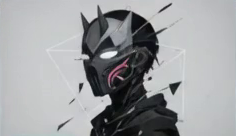
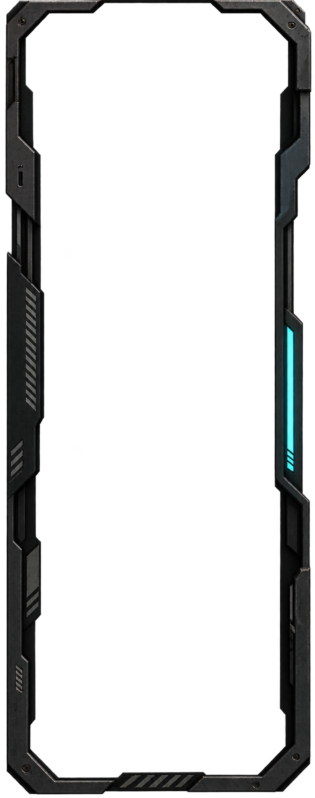
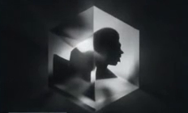

WORLD BUILDING
在代码里，构建一个世界
关于角色、叙事与独立应用的探索记录。将想象化为可触碰的结构，在每一次实践中留下线索。

ARCHIVE ACCESS / LOCAL ARRAY
分层载入视觉档案，记录每一次探索。

关于角色、叙事与独立应用的探索记录。将想象化为可触碰的结构，在每一次实践中留下线索。
从灵感到交付，记录真正发生的过程。拆解目标，连接工具，让每一处设计都能被验证。
写作、设计与生活之间的微小片段。离开熟悉的路径，在风与回声之间找到新的观察角度。
几何、层次与运动所形成的界面语言。以清晰的结构整理复杂信息，让视线拥有自己的路径。
在信息密度与留白之间寻找平衡。通过一次次实验，记录问题，也保存问题背后的思考。

作品之外，保存方法和成长的轨迹。新的灵感正在形成，而档案中的故事始终没有结束。
以代码为工具，以故事为坐标。
将一次次探索，收藏成可以触碰的作品。
PERSONAL ARCHIVE / DESIGN & DEVELOPMENT
BUILD · EXPLORE · ARCHIVE
TRANSMISSION COMPLETE / 01透视轮廓，记录空间的秩序。
旋转轴线：XYZ
结构类型：同轴组合
轮廓层：外壳 / 内环 / 核心
投影：PERSPECTIVE
材质：WIRE + SURFACE
面片排序：DEPTH
渲染：NATIVE CANVAS
采样角度24
剖面层级15
视图宽度1280
视图高度720
原片帧率24.000
序列编号02 / B
结构模式WIREFRAME
显示状态PREVIEW
几何是秩序，运动是语言。
让复杂的信息，在清晰的结构中展开。
画幅宽度 1280
画幅高度 720
参考帧率 24.000
序列时长 10.005
渲染方式 NATIVE
构图研究 02 / B